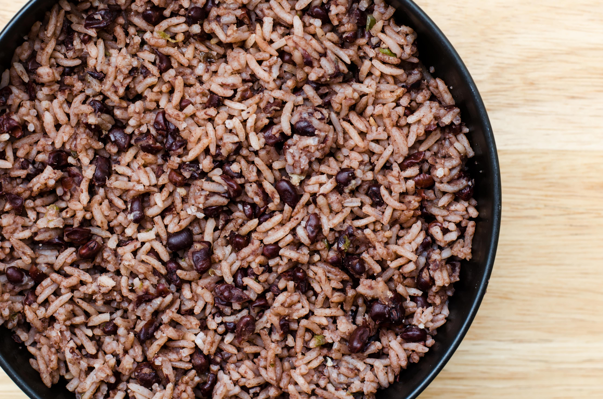

Congri

Description
Congri is the name for the Cuban version of the Latin American staple, black beans and rice. This dish is sometimes
referred to as Moros y Cristianos depending on what region of Cuba you are in and can be made using red or black beans
depending on the region and your own personal preferences.
For our version we will be cooking the rice and beans together rather than separately. This will give the rice it's
signature greyish brown color, which is where it gets the name Congri (with gray).
Ingredients
- 1 pound dried black beans
- 6 cups water
- 2 large green bell peppers, diced
- 2 large Spanish onions, diced
- 6 cloves of garlic, minced
- 1/4 cup extra virgin olive oil
- 2 dry Spanish chorizo sausages, diced
- 4 cups parboiled long-grain rice
- 1 tablespoon cumin
- 1 tablespoon adobo all purpose seasoning
- 1 bunch fres cilantro, chopped
- salt, to taste
Steps
- Pick through one pound of dried black beans. Throw away all pebbles that may have made their way into the bag;
they'll be white or gray in color and likely smaller than the beans. Rinse the beans in a strainer under running
water, running your hand through them to ensure all beans get washed.
- To soak the beans: Add the beans to a medium-size pot filled with the water (there should be about 1 inch of
extra water covering the beans) and bring to a boil. Cover and turn off the flame. Let them soak overnight.
- The next day, bring the pot back up to a boil. Then turn the heat down to medium. Add the bay leaf and cover the pot.
- Meanwhile, in a large stock pot set over medium heat, sauté the bell peppers, onions, and garlic cloves in the olive
oil. Once they start to soften and become translucent, add the chorizo.
- When the chorizo is a bit browned, add in the uncooked rice and stir thoroughly. (Be sure to add the rice before the
vegetables are totally browned.)
- When the uncooked rice is fully coated in the oil and combined with the other ingredients, add the cumin and adobo.
Stir to combine, then turn off the heat and let the mixture sit until the beans are ready to be added to the pot.
- Once the beans are chewable but not mushy, about 60 to 90 minutes, turn off the heat. Let them sit, covered, in their
broth for about 3 to 5 minutes.
- Once the beans have partially cooled, remove the bay leaf. Then, drain the beans, taking care to reserve 4 to 6 cups
of the boiling liquid (aka bean broth). Add that broth to the larger stock pot with the rice. Turn the heat back on to
high, and stir thoroughly. Note: The amount of broth can vary; if there are less than 6 cups of broth, substitute the
remainder with water to keep the ratio of 1 ½ cups of liquid to each cup of rice.
- Promptly stir the beans into the rice so they don't dry without the broth. Stir until the mixture reaches a light
boil. Cover, bring the heat down as low as possible, and let simmer.
- After roughly 20 minutes, uncover the beans and rice. Stir with a long fork, doing your best not to break the beans.
Be sure to reach the bottom of the pot with the fork so the rice doesn't stick and burn.
- After stirring, cover the pot again for about 5 minutes and let cook on low heat. At that point, the rice has likely
soaked up most of the broth, so the congrí should be rather dry. If you prefer your rice and beans on the wetter side,
cover the pot for 2 to 3 minutes instead.
- Turn off the heat, and add the cilantro and salt to taste. Give it one final stir before serving warm.